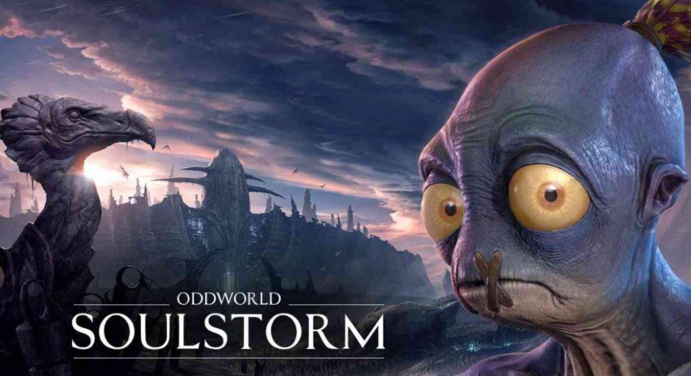

Oddworld: Soulstorm

Traducción del inglés-Oddworld: Soulstorm es un juego de plataformas
desarrollado y publicado por Oddworld Inhabitants para Microsoft Windows,
PlayStation 4 y PlayStation 5. ¡Es la secuela de Oddworld: New 'n'
Tasty de 2014! y una reinvención de Oddworld de 1998: Abe's Exoddus.
Enlace